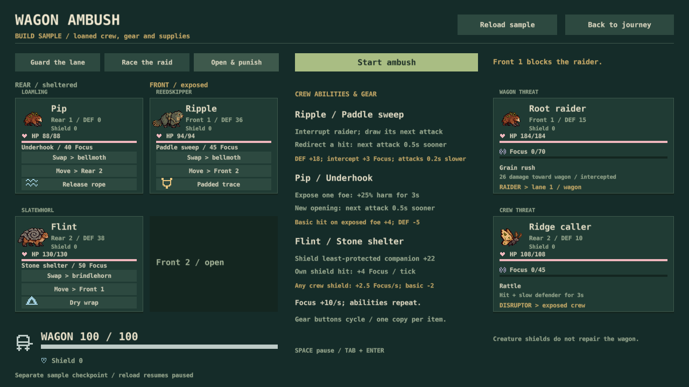
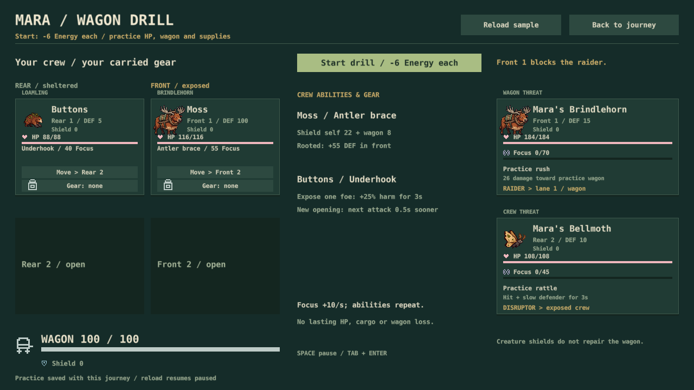
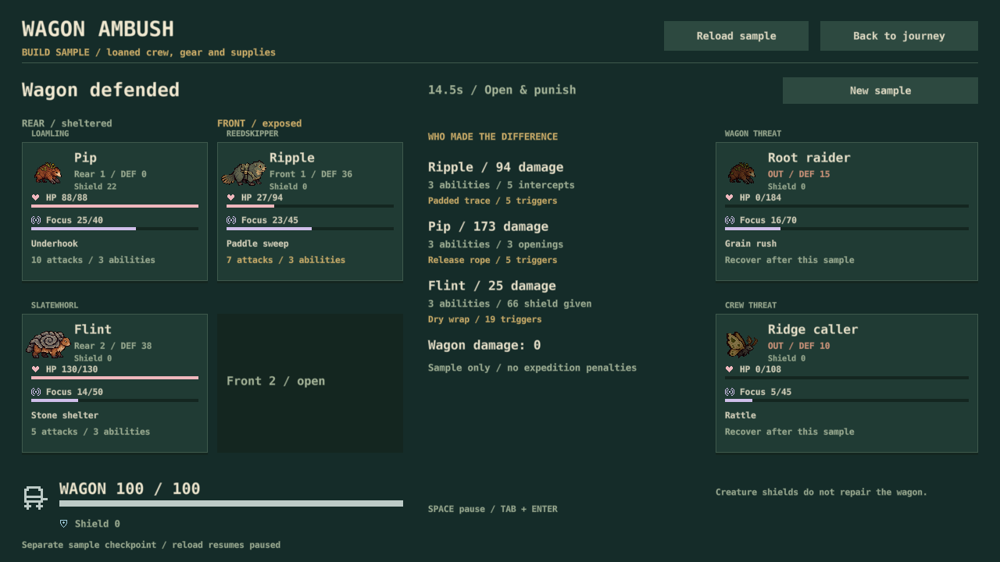

S29 / November 1, 2026 / implemented
Six creatures. Different ways to defend.
Crew selection, equipment interactions and Mara's wagon drill are playable. This is a progress report; no repeat votes.
Try it: F3 → Wagon ambush / new combat. Choose a preset, swap creatures, move positions and cycle gear. At Mossbell, Mara's wagon drill uses your actual crew and carried items.

What changed
Reedskipper interrupts and redirects a hit. Loamling exposes an enemy for stronger follow-ups. Slatewhorl repeatedly shields companions. The original three kits remain. Gear can improve a compatible plan and weaken a mismatched one.
Pause for limited medicine or wagon repair. Each has one charge, an exact visible gain and no wasted use on full targets. Creatures do not repair the wagon.
Mara: starting costs 6 Energy per companion once; positive Condition required. Temporary full HP, a practice wagon and borrowed supplies protect real health, wagon, cargo and provisions. Gear comes from your carried inventory. No rewards or repeated paid drills. Older battles and saves still complete.

Same-start comparisons
Seeds 1–24 per row; same opponents; no supplies used. Each result replays exactly from a saved mid-fight checkpoint. Gear is the same trace/rope/wrap assignment, not an optimal search.
| Plan | Gear | Wins | Time | Wagon left |
|---|---|---|---|---|
| guard | none | 24/24 | 15.0–15.0s | 100–100 |
| guard | sample | 24/24 | 15.0–15.3s | 100–100 |
| rush | none | 24/24 | 13.8–14.4s | 18–34 |
| rush | sample | 24/24 | 14.4–14.4s | 18–26 |
| control | none | 24/24 | 14.5–15.9s | 100–100 |
| control | sample | 24/24 | 14.5–15.0s | 100–100 |
Guard protects the wagon; Rush trades integrity for speed. Compatible gear helps Open & punish, while the same assignment worsens Rush. All 20 trios won across three more seeds: this is an approachable sample, not proof of broad balance or satisfying difficulty.

Checked and still open
133 Lua scenarios, native save/backup/GUI checks, paid-practice persistence, five actual 1280×720 captures, and 144 matched runs with checkpoint replays. New-player lens: inspect threats, costs and repeating skills. Expert lens: inspect openings, intercepts and item triggers. These are focused developer checks, not a human enjoyment study.
Next: S30 connects this combat to road encounters and settles wagon, health, Energy and supplies once. Whole-journey pacing, listening and the existing native activation investigation remain open. Art stays deferred.
Creature ledger: 24 briefs, six species and six playable kits